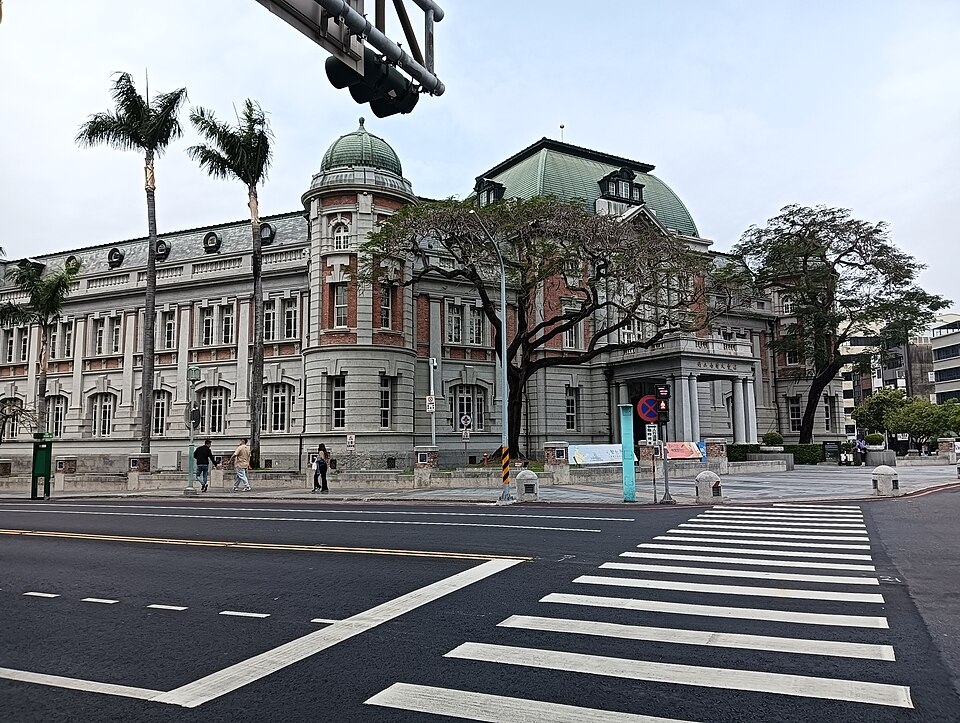
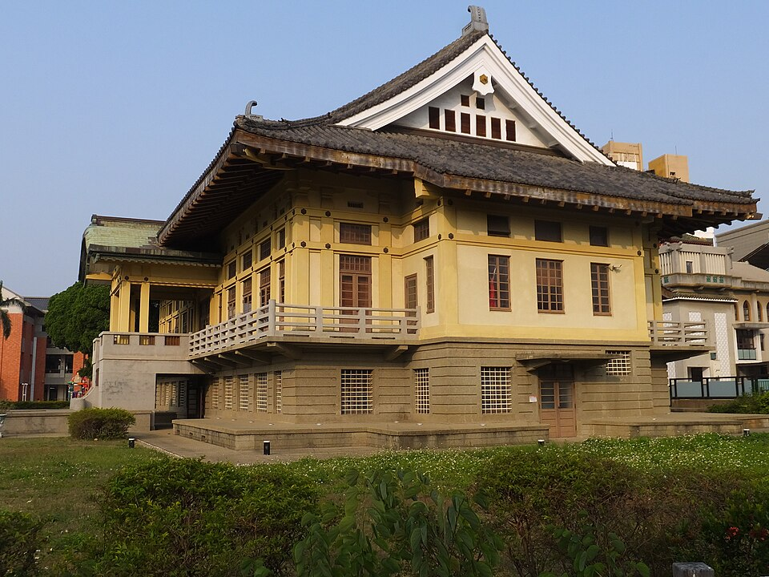
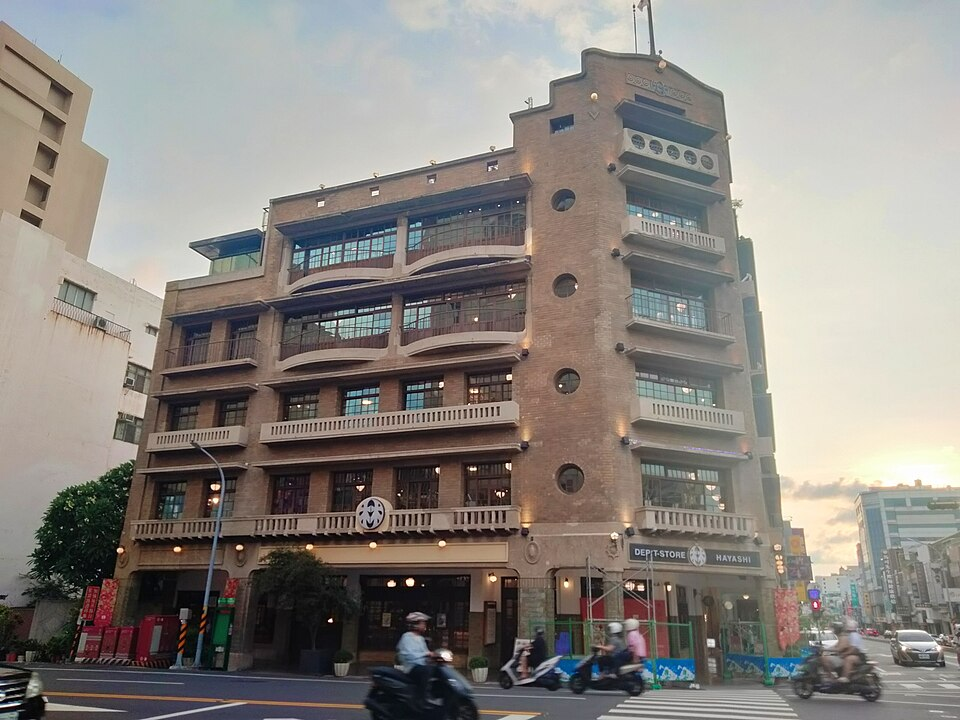
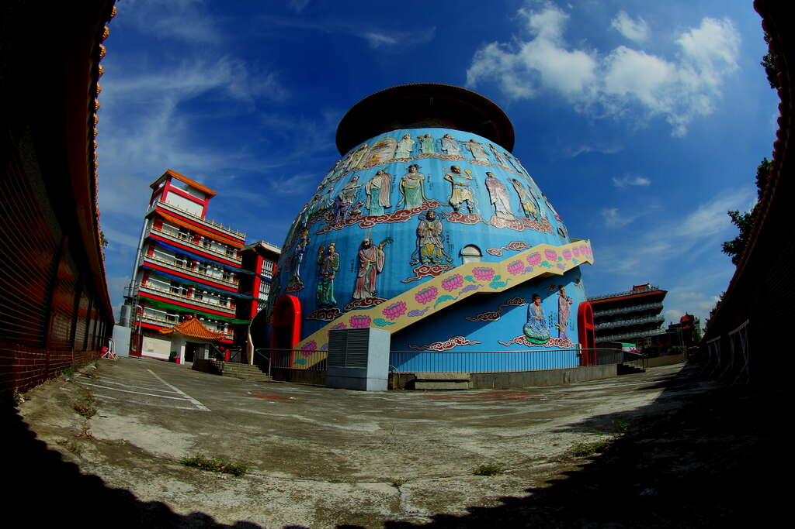
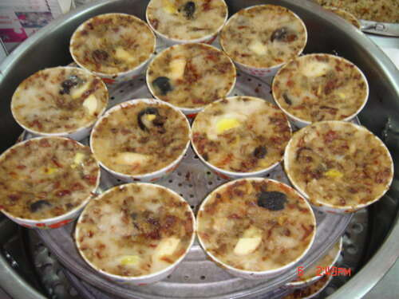
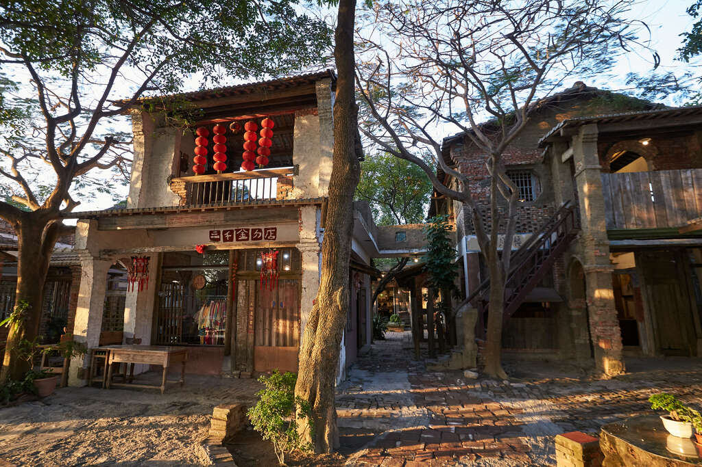

四年級上學期 · 第 4 課：挑景點，開文件
今天挑景點，要照著宣言！
先填好最上面的年級、班級、座號。
我打算和…一起去
我想要以…來規劃景點
我選擇的區域／主題／交通路線是
因為
🎴 我的宣言
先看影片，再動手 👇
影片：臺北市中山區濱江國小（YouTube，2 分 33 秒）
🎬 重點
開新文件
作業裡按「＋ 新增或建立」→「文件」
一定要從作業裡開，老師才看得到！
取名字
點左上角，改成：
台南行程規劃＿4年1班7號
貼上宣言
複製宣言 → 文件第一行 → Ctrl + V
自動存檔
不用按儲存。按錯了？Ctrl + Z
一日遊：9:00 出發，17:00 前回家。時間 ＝ 玩 ＋ 路上
🚶 同一區：近
走路約 10 分鐘
🚌 不同區：遠
坐車 30～60 分鐘
🗺️ 區域型：府城歷史散步－孔廟線
都在老城區，走路就到 → 可以排很多站

第 1 站
國立台灣文學館
🚶 10 分 → 第 2 站
台南孔子廟

🚶 10 分 → 第 6 站
台南武德殿

🚶 10 分 → 第 8 站
林百貨
官方共 16 站（綠色＝上面 4 站）
💡 時間都花在「玩」，不是「路上」
官方遊程 ↗資料：台南旅遊網（臺南市政府觀光旅遊局）。照片：Wikimedia Commons，台灣文學館 Allervous（CC BY-SA 4.0）、孔子廟 CEphoto, Uwe Aranas（CC BY-SA 4.0）、武德殿 lienyuan lee（CC BY 3.0）、林百貨 Lchung9779（CC0）
🏷️ 主題型：麻豆學甲一日遊（藝文宗教）
分在麻豆、學甲兩區，要搭公車

09:10～10:25
麻豆代天府

10:50～11:40
🍜 麻豆碗粿蘭

12:45～13:50
老塘湖藝術村
15:00～17:00
總爺藝文中心
07:40 出發 → 🚌 → 代天府 → 🚌 → 午餐 → 🚌 → 藝術村 → 🚌 → 總爺 → 17:00 回家
💡 只有 4 站，卻玩了一整天！
官方遊程 ↗資料與照片：台南旅遊網（臺南市政府觀光旅遊局）；公車班次以台南市公共運輸處公告為準
📌 比一比
🗺️ 區域型：走路 → 排 4～5 站以上
🏷️ 主題型：搭車 → 3～4 站就一整天
💡 規劃時要想：想玩多久？ ＋ 搭車多久？
🎒 時間背包
點地點放進一天，點行程可拿掉。先按範例比比看！
今天只做：找景點 🔍
下一節：把景點連起來 🔗
安排行程要反覆調整，不順可以回來改景點
今天先把要去的地方選好！
目標：至少 3 個景點 ＋ 1 家美食
🧰 不同類型，準備不一樣
畫面：台南旅遊網旅遊地圖、景點頁（2026/10/5 擷取）；33 線站牌圖：大台南公車
🧭 我的找景點路線
③ 找不到？用關鍵字！
打 2～3 個字，中間空一格
地方 ＋ 東西
安平 古蹟
食物 ＋ 地方
牛肉湯 中西區
加「一日遊」「推薦」
安平 一日遊
加「開放時間」
安平樹屋 開放時間
💡 太少 → 太多結果 太多 → 找不到 官方網站最準
試試：安平 古蹟 ↗這步最久，慢慢做！網站、文件一起開
📋 要交
複製格子
右邊按「📋 複製格子」→ 文件宣言下面空一行 → Ctrl + V
從網站貼資料
加 Shift＝只貼文字，不帶顏色
▶ 看影片（29 秒）
換行整理
一項一行，每站空一行。
貼網址
沒有分享鈕？點網址列，Ctrl + C。
▶ 看影片（36 秒）
👀 寫好一站：
第 1 站：安平古堡 在哪一區：安平區 開放時間：10:00～17:10 門票：全票 70 元，半票 35 元 停留多久：1 小時 景點網址：https://www.twtainan.net/zh-tw/attractions/…
📄 景點清單格子
想多一站？複製一站貼在下面。
① 交文件
💡 老師會直接看你的文件
② 交學習單
再按下面的「繳交學習單」
✅ 檢查
⭐ 加分：下雨了，換去哪？為什麼？
🎁 尚未完成